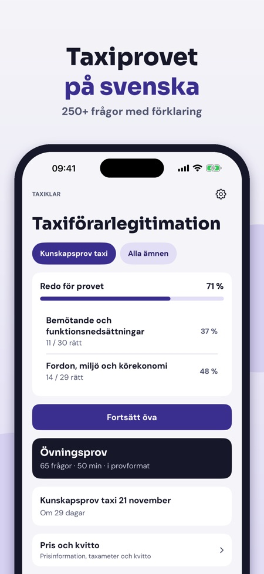
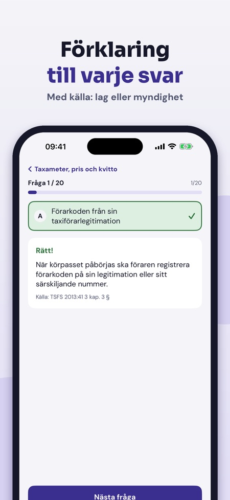
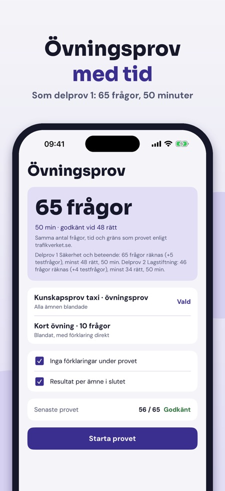

Taxiklar hjälper dig att öva inför kunskapsprovet för taxiförarlegitimation, med förklaringar och inte bara rätt svar. Appen är på svenska och fungerar utan internet.



Du kan öva frågor inför kunskapsprovet för taxiförarlegitimation, per ämne och med förklaring till varje svar.
Ja, övningsprov med tid i provets format (delprov 1).
En samlad del om jämförpris, taxameter och prisdekal.
Du kan öva 20 frågor per land, göra ett helt övningsprov och använda ordlistan, checklistan och Pris och kvitto.
Nej. Fullversionen är ett engångsköp som låser upp alla frågor, obegränsade övningsprov och statistik.
Ja, den fungerar utan internet.
Hos Trafikverket. Taxiklar är fristående och inte kopplad till Transportstyrelsen eller Trafikverket.
Taxiklar hjälper dig att öva inför kunskapsprovet för taxiförarlegitimation – med förklaringar, inte bara rätt svar.
Utan köp kan du öva 20 frågor per land, göra ett helt övningsprov och använda ordlistan, checklistan och Pris och kvitto. Fullversionen är ett engångsköp som låser upp alla frågor, obegränsade övningsprov och statistik. Ingen prenumeration.
Taxiklar är fristående och inte kopplad till Transportstyrelsen eller Trafikverket. Provet gör du hos Trafikverket.